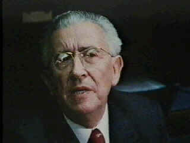

Prof. Maurice Bucaille (1920)

Maurice (Moris), 1920 yýlýnda Fransa'da doðdu. Eðitimini týp doktoru olarak tamamladý. Daha sonra Paris Týp Fakültesi'nde Cerrahi Kliniðini Baþkanlýðý yaptý. Ýyi bir Hýristiyan ve ünlü bir cerrah olarak tanýndý.Bu þekilde tanýnýp çalýþmalarýný devam ettirirken, Suudi Arabistan Kralý Faysal ile hastalýðý sebebiyle tanýþtý. Bu tanýþma hayatýnda çok büyük deðiþikliklere bir baþlangýç teþkil etti.
Suudi Arabistan Kralý Faysal, kendisini tedavi eden doktoru Maurice'e Kur'ân-ý Kerim hediye etti. Aydýn, bilgili ve iyi lisan bilgisine sahip olan kral ile ünlü doktoru arasýnda kýsa zamanda sýcak bir dostluk ve arkadaþlýk vücuda gelmiþti. Çok önemli bir þahsiyetin hediyesini alan doktor, buna ayrý bir deðer verdi ve Kur'ân-ý Kerim'i okumaya baþladý. Bu okuma sýrasýnda, muhtelif bilim dallarýyla ilgili önemli bilgilerin yer aldýðýný gördü. Kur'ân-ý Kerim'in on dört asýr evvel nazil olduðunu bildiði için, söz konusu bilgilere daha dikkatli bir þekilde yaklaþým göstererek incelemelerine devam etti.
Kur'ân-ý Kerim üzerinde çalýþmalarýný devam ettiren doktoru, Kitap'ta geçen ilmi ifadelerle zamanýn bilimsel bulgularýnýn örtüþtüðünü görmesi, daha da hayret verici bir durumda býraktý. Söz konusu bilgilerin Kur'ân-ý Kerim tefsirlerinde yer almýþ olduklarý þekliyle kabul etmede bir an tereddüt geçirdi. Eðer Kur'ân'da yer alan ilmî bilgiler doðruysa, bu kitap beþer kelaâmý olamazdý. Ancak, Ýlâhî bir eser olabilirdi. Tefsirlerde yer alan bilgilerin gerçekten Kur'ân'da yer alýp almadýðýný düþünmeye baþladý. Söz konusu tefsirlerdeki bilgilerin yanýltýcý olabileceði düþüncesinden hareketle Arapça öðrenmeye baþladý. Arapça dili üzerindeki çalýþmalarý sonucunda iyi bir lisan bilgisine sahip oldu ve Kur'ân Arapçasý'ný öðrendi.
Maurice, tefsirlerde yer alan bilimsel verilerin gerçekten Kur'ân'da yer aldýðýný, bir çok ayetin ilmi bilgiler ihtiva ettiðini bizzat kendi çalýþmasý sonucu öðrendi. Aradan asýrlar geçmesine ve muazzam teknolojik geliþmelere raðmen, Kur'ân'daki bilgilerle günümüzün bilimsel buluþlarýnýn uyum içerisinde olduðunu tesbit etti. Bu çalýþmalarýnýn sonucunda Kur'ân-ý Kerim'in Allah tarafýndan gönderildiðine iman etti. Daha sonra, günümüze kadar çok sayýda baský ve tercümesi yapýlmýþ bulunan, "Tevrat, Ýnciller, Kur'ân-ý Kerim ve Bilim" adýný taþýyan ünlü eserini yazdý. Müslüman olan ünlü doktor, yeni dini Ýslâmiyet'e büyük hizmetlerde bulundu.
Kâinatta cereyan eden düzeni, intizam ve kanunlarý inceleyen bilim adamlarý asýrlar boyunca ulaþtýklarý keþifleriyle bir taraftan insanlýða büyük hizmette bulunmuþken, diðer taraftan Yaratýcýnýn kudreti karþýsýndaki hayretleri de kat kat artmýþtýr. Son dönemlerin dünyaca ünlü bilim adamý ve araþtýrmacýlarýndan olan Kaptan Cousteau da bu hayranlýðý hisseden bilim adamlarýndan olmuþ, iki denizin sularýnýn (Akdeniz ile Atlas Okyanusu) yan yana bulunmasýna raðmen karýþmadýklarýný hayretler içinde görmüþtür. Kendisi için, bundan da daha þaþýrtýcý olaný, yeni keþfettiði hadisenin on dört asýr evvel nazil olmuþ olan Kur'ân-ý Kerim'de açýk bir þekilde ifade edilmiþ bulunmasýydý.
Kaptan Cousteau'ya, Kur'ân-ý Kerim'in, "O Allah ki, denizi birbirine salývermiþtir. Ýþte þu pek tatlý ve susuzluðu giderici, þu da çok tuzlu ve acýdýr. Aralarýna ise, birbirlerine karýþmalarýný önleyen görünmez bir engel koymuþtur" (Furkan 25/53; ayrýca, Rahman Sûresi 19-20 Âyetlerinde, "O iki denizi salýverdi ki, o denizler birbirleriyle karþýlaþýrlar. Aralarýnda ise bir engel vardýr; birbirine karýþmazlar" buyrulmuþtur) âyetini bildiren Maurice, bilim adamýný daha da hayretler içinde býrakmýþtýr.
Prof. Maurice'in, "Tevrat, Ýnciller, Kur'ân-ý Kerim ve Bilim" adlý eseri, deðiþik yazarlar tarafýndan birkaç kez Türkçe'ye tercümesi yapýldýðý gibi, muhtelif dillere de tercüme edilmiþ ve çok sayýda okuyucuya ulaþmýþtýr. Bu sebepten ötürü, eser 1986 yýlýnda "Altýn Kitaplar Ödülü"ne lâyýk görülüp ödüllendirilmiþtir. Eserinde yazar; Tevrat, Ýncil ve Kur'ân-ý Kerim'deki ilmi bilgilerle günümüzde ilmin ulaþtýðý neticeleri kýyaslama yoluna gittiði gibi, üç kutsal kitabýn nazil olduktan sonra, asrýmýza ulaþýncaya kadar geçirdikleri aþamalarý ve muhafaza ediliþ þekilleri üzerinde de durarak bu açýdan da deðerlendirmeye tabi tutmuþtur. Eserin son olarak Prof. Suat Yýldýrým tarafýndan Türkçe tercümesi (ikinci kez) yayýmlanmýþtýr. Ünlü doktorun diðer ünlü bir eseri ise "Ýnsanýn Kökeni Nedir?" adýyla Türkçe'ye çevrilmiþ ve bu tercüme eser de önemli bir ilgi çekmiþtir.
Risâle-i Nur'da; müsteþriklerin Ýslâmiyet, Peygamber Efendimiz ve Kur'ân-ý Kerim ile ilgili görüþlerinden nakiller yapýldýðý gibi, sözünü ettiðimiz Prof. Maurice Bucaille'in görüþlerinden de alýntý yapýlmýþtýr; "Meþhur muharrir, müsteþrik, edebiyat-ý Arabiye mütehassýsý ve Kur'ân-ý Kerim'in mütercimi …" denilerek görüþleri aktarýlmýþtýr: "Bizans Hýristiyanlarýný içine düþtükleri bâtýl îtikadlar girîvesinden ancak Arabistan'ýn Hira Daðýnda yükselen ses kurtarabilmiþtir. Ýlâhî kelimeyi en ulvî makàma yükselten ses, bu ses idi. Fakat, Rumlar bu sesï dinleyememiþlerdi. Bu ses, insanlara en temiz ve en doðru dîni tâlim ediyordu. O yüksek din ki, onun hakkýnda, Gundo Firey Hesin gibi mùhakkik bir fâzýl þu sözleri pek haklý olarak söylüyor: "Bu dinde mukaddes sular, þâyân-ý teberrük eþya, esnâm ve azîzler; yâhut sekerât-ý mevt esnâsýnda edâmetin bir fâide vereceðini ifade eden sözler; yâhut baþkalarý tarafýndan vukù bulacak duâ ve niyazlarýn günahkârlarý kurtaracaðýna dâir ifâdeleri yoktur. Çünkü bu gibi akîdeler, onlarý kabul edenleri alçaltmýþtýr." Doktor Maurice , Le Parle Françeise Roman (Löparle Franses Roman) ünvanlý gazetede Kur'ân'ýn Fransýzca mütercimlerinden Selman Runah'ýn tenkidâtýna verdiði cevapta þöyle diyor ki:
Kur'ân nedir? Her tenkidin fevkinde bir fesâhat ve belâgat mu'cizesidir. Kur'ân'ýn üç yüz elli milyon Müslüman'ýn göðsünü haklý bir gururla kabartan meziyeti, onun her mânâyý hüsn-ü ifade etmesi îtibârýyla, münzel kitaplarýn en mükemmeli ve ezelî olmasýdýr. Hayýr, daha ileri gidebiliriz: "Kur'ân, Kudret-i Ezeliyenin, inâyet ile insana bahþettiði kütüb-ü semâviyenin en güzelidir. Beþeriyetin refâhý nokta-i nazarýndan Kur'ân'ýn beyânâtý, Yunan felsefesinin ifâdâtýndan pek ziyâde ulvîdir. Kur'ân, arz ve semânýn Hàlýkýna hamd ü þükranla doludur, Kur'ân'ýn her kelimesi, her þeyi yaratan ve her þeyi hâiz olduðu kàbiliyete göre sevk ve irþad eden Zât-ý Kibriyânýn azametinde mündemiçtir. Edebiyat ile alâkadar olanlar için, Kur'ân bir kitâb-ý edebdir. Lisan mütehassýslarý için, Kur'ân bir elfaz hazînesidir. Þâirler için, Kur'ân bir âhenk menbâýdýr. Bundan baþka, bu kitap, ahkâm ve fýkýh nâmýna, bir muhît-i maariftir. Dâvud'un (a.s.) zamanýndan, Jan Talamus'un devrine kadar gönderilen kitaplarýn hiçbiri, Kur'ân-ý Kerîm'in âyetleriyle muvaffakiyetli bir þekilde rekabet edememiþtir. Bundan dolayýdýr ki, Müslümanlarýn yüksek sýnýflarý, hayatýn hakîkatini kavramak nokta-i nazarýndan, ne kadar tenevvür ederlerse, o derece Kur'ân ile alâkadar oluyorlar ve ona o kadar tâzim ve hürmet gösteriyorlar.
Müslümanlarýn Kur'ân'a hürmetleri dâimâ tezâyüd etmektedir. Ýslâm muharrirleri, Kur'ân âyetlerini iktibas ile yazýlarýný süslerler ve o yazýlar, o âyetlerden mülhem olurlar. Müslümanlar, tahsil ve terbiye îtibârýyla yükselttikçe, fikirlerini o nisbette Kur'ân'a istinad ettiriyorlar... Kur'ân'ýn her gün daha fazla tecellî etmekte olan güzellikleri, her gün daha fazla anlaþýlan fakat bitmeyen esrârý, þiir ve nesirde üstad olan Müslümanlarý, üslûbunun nezâhet ve ulviyeti huzurunda diz çökmeye mecbur etmektedir… Yeni nesiller ve asrî mekteplerin mezunlarý da, Kur'ân'a ve Müslümanlara karþý müstehziyâne bir cümlenin sarfýna tahammül etmemektedirler. Çünkü, Kur'ân, iki sýfatla bu ehliyeti hâizdir. Bunlardan Birincisi: Bugün ellerde tedâvül eden Kur'ân'ýn, Hazret-i Muhammed'e (a.s.m.) vahiy olunan kitabýn ayný olmasýdýr. Halbuki, Ýncil ile Tevrat hakkýnda birçok þüpheler ileri sürülmektedir. Ýkincisi: Müslümanlar Kur'ân'ý Arapçanýn en kuvvetli muhâfýzý ve esâsât-ý dîniyenin amelî bir mâhiyet almasýnýn en kuvvetli menbâý telâkkî ederler. Binâenâleyh, Monsieur Renaud (Mösyö Reno) eserini tashih edecek olursa, bu tercümesiyle, insanlarý tenvir husûsunda insanlýða büyük bir muâvenette bulunur ve bâtýl îtikadlarýn hudutlarýný târ ü mâr etmeye hâdim olur." (Ýþaratü'l-Ý'caz, 1997, s. 263-64)